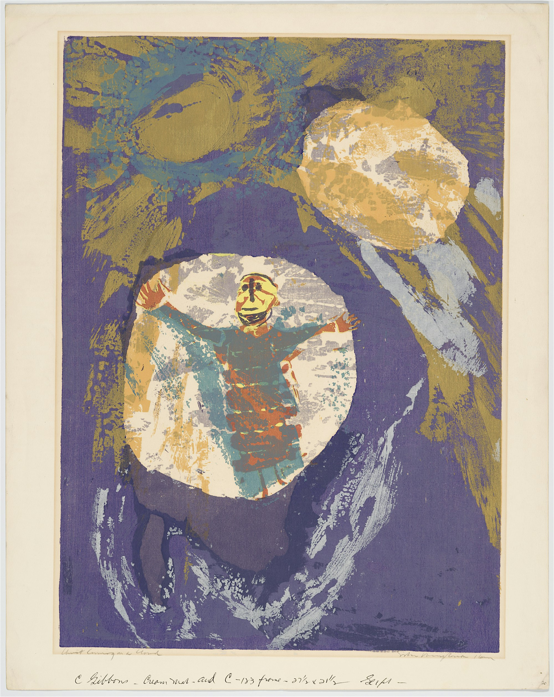
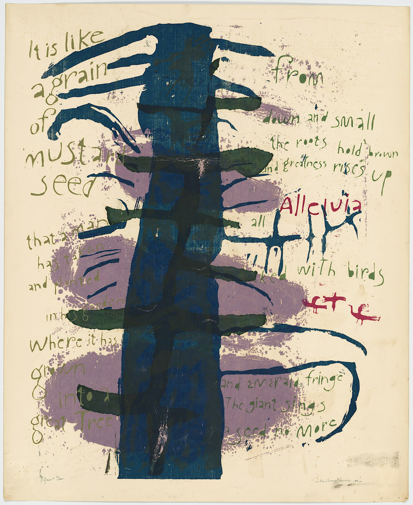
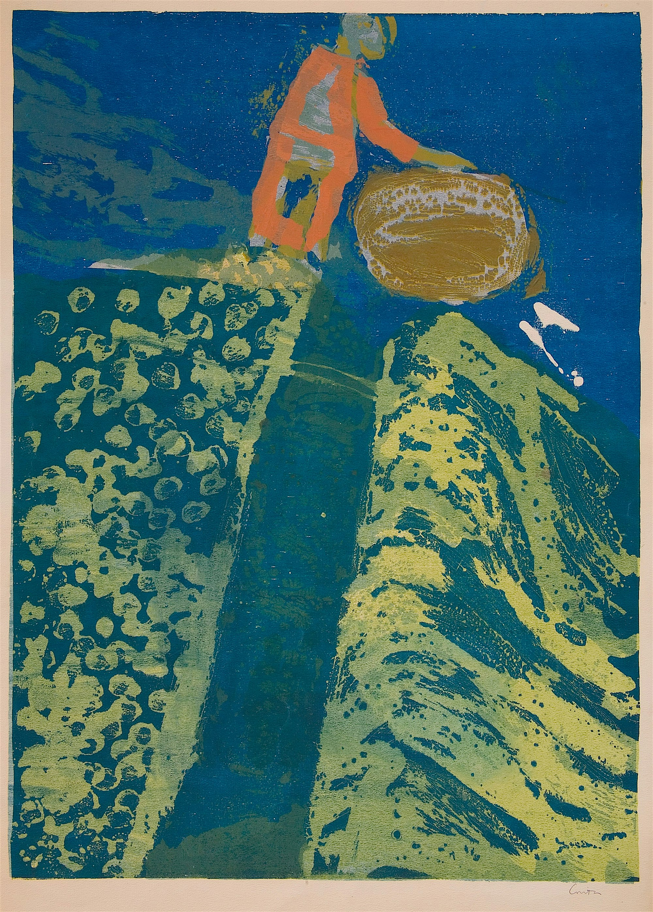

Works on Paper 1950-60
Sister Corita Kent’s prints from the 1950s and 1960s reflect her groundbreaking fusion of spirituality, activism, and pop culture. A nun, artist, and educator, Corita used bold colors, striking typography, and dynamic compositions to create works that challenged societal norms and inspired hope. Her prints from this era often incorporated messages of peace, justice, and love, drawing on scripture, poetry, and contemporary advertising to engage audiences with profound yet accessible imagery. Through her art, Corita redefined what sacred and secular expression could mean in modern times.


